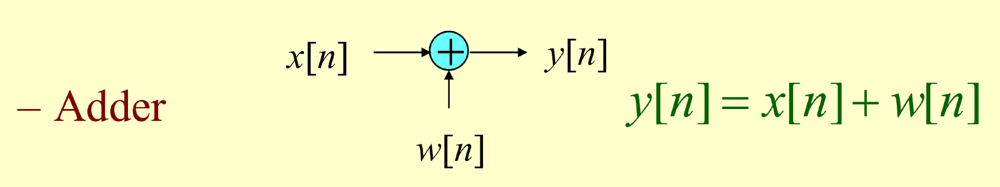
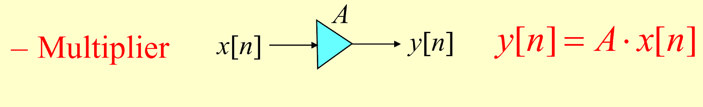
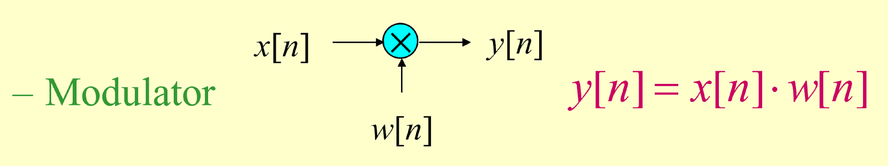

数字信号处理
本文最后更新于：8 天前
数字信号处理
时域数字信号处理
信号的基本概念
信号：一个（一维或多维）的数据量。
从模拟信号到数字信号
信号的分类：
- 模拟信号
X,Y轴都是连续值的信号，来自外界收集和用于设备交互 - 数字信号
X,Y轴都是离散值的信号，用于DSP高速，便捷处理 - 量化信号
Y轴是离散值的信号，进行过Y轴数据编码，提高数据处理能力，抗噪等 - 离散信号
X轴是离散值的信号，由采样生成，是DSP的核心内容
数字信号的特点：
- 抗干扰能力强
- 功耗低
- 电路设计简单，集成度高
- 后期处理方便
DSP的常见应用
DSP应用范例：
- 离散多音调传输
- 行动电话
- 数字声音合成
- 信号编码和压缩
- 信号增强
基本信号与基本算法
连续信号的表示 $f(t)$
离散信号的表示 $x[n]$
基本处理办法
多信号处理：加法，数乘
单一信号处理：补零，时移，反折，拉伸
相对复杂处理：微分，积分，卷积，相似计算
补零
对于不同长度或不在统一时间范围的序列间的运算，必须先将不一致的部分序列做适当的补零运算，使这些序列拥有相同的时间n范围。
- 补零是一个书写简单，但是编程困难的问题
- 补零需要改变用于存储序列的数组长度，这在大部分编程中都是较为困难的。
- 如何处理序列变化长度需要自行研究
别忘了改变序列长度后，序列时间index也要做相应处理
加法
加法运算：
$$f(t)=g(t)+k(t)$$

加法运算的一个简单应用：去噪——总体平均
假设 $d_i$ 表示干扰原资料向量 $s$ 的第 $i$ 次量测值的噪声序列：
$$
x_i[n]=s[n]+d_i[n]
$$
在 $K$ 次量测后，计算一个平均数据向量，称为总体平均。
$$
X_{ave}=\frac{1}{K}\sum_{i=1}^{K}X_i=\frac{1}{K}\sum_{i=1}^K(s+d_i)=S+\frac{1}{K}\sum_{i=1}^Kd_i
$$
从噪音定义可以知道， $\sum_{i=1}^Kd_i\approx 0$ 。
对于一个非常大的 $K$ 值而言， $X_{ave}$ 通常相当程度近似于原资料向量 $s$ 。
乘法
- 数乘：
$$f(t)=k\cdot g(t)$$

乘法运算：放大器。
- 现实中的放大器往往也会将噪声等干扰一起放大，所以通常和其他处理配套使用。
- 放大器需要引入能量，在电路设计中通常代表需要提供新的能量源（功率放大器—功放）
- 两个信号相乘
乘积 (调变，modulation) 运算:
$$f(t)=k(t)\cdot g(t)$$

- 乘法在DSP中有着特殊的作用，通常表明的某种操作。
- 文字描述操作是无法量化计算的，例如屏蔽某频率的信号；放大某些局部信息；对当前时间点的信号，做延时间轴的弱化扩散处理
- 方法：将要实施的处理，转化成一个特定的信号，然后做乘法
- 以及乘法后的加法和滑动窗处理，三个处理组成最核心的卷积运算。
很多情况下，乘法的运算其中一方是特意设计的，表明某个效果的操作
应用：遮罩。
时移
时间位移运算：时移时一个单一信号的处理方法。
$$
g(t)=f(t-t_0)
$$
离散格式 $y(n)=x(n-N)$ 其中 $N$ 是一个整数。
若 $N>0$ ，称之为延迟运算：
若 $N<0$ ，则称之为超前运算。
计算方法：
- 平移法
- 罗列计算法
应用：
- 主动发射信号，并接受： 激光定位，激光扫描距离 = 延迟时间*速度/2
- 被动接受信号，并不进行发射:GPS
反折
时间反向或是折叠运算
$$
g(t)=f(-t)
$$
离散格式 $y[n]=x[-n]$
时域尺度变换（拉伸）
拉伸运算： 。
离散格式： 。
拉伸变化我们称为采样率（上采样和下采样）的变化，其中 通常采取以下定义：
- 若 ，则 通常为正数，即 。
- 若 ，则通常找到一个正整数 ，使得 。
- 若 ，则先处理 ，然后再做反折。
- 通常对于复杂的变化，定义二次采样（采样率变化），不在拉伸部分讨论，把它单独作为一个系统。
时域尺度变换（上采样）
若以整数因子$L>1$来进行上采样，计算公式见下图。
- 除法是上采样，越除得到的数列越长。而“上”采样的上字与长短对应，上采样变长。
- 对于$x[0.5]$之类的index不为整数的项，我们直接定义其为0
- 为0的部分，通常通过内插算法（interpolation）后续将其补上
- 在上述计算中，仍然左右不变的是$n$项，可以使用列举法进行计算。

时域尺度变换（下采样）
若以整数因子M>1来进行下采样，计算公式见下图。
- 乘法是下采样，越除得到的数列越短。“下”采样的序列变短。
- 下采样不会产生新的项。
- 在上述计算中，仍然左右不变的是 $n$ 项，可以使用列举法进行计算

时域尺度变换9 双向拉伸
内插
相对复杂的基本运算
差分
差分： $x^{\prime}[n]=x[n+1]-x[n]$
二阶差分： $x^{\prime \prime}[n]=x[n+2]+x[n]-2x[n+1]$
累加
累加： $g(n)=\sum_{a}^{b}x[n]$
卷积
卷积是整个数字信号处理中最重要的运算。
- 我们所学的基础处理整合起来称为“系统”
- 在本课程中我们只学习一种系统“线性时不变系统”
- 一个线性时不变系统，不管多么复杂，其都可以变成输出信号=输入信息与特定（且固定）信号的卷积
即：本课程的任何系统，都可以用卷积来表示和研究。S
卷积分为两种：线性卷积和周期（循环）卷积
线性卷积的连续性表达式为
$$
F(t)=f(t)*g(t)=\int_{a}^{b}f(t-m)g(m)\mathrm{d}m
$$
其离散表示为
$$
y[n]=x[n]*h[n]=\sum_{k=-\infty}^{\infty}x[n-k]h[k]
$$
运算的基本流程：
- 将 $h[n]$ 反转，作为滑动窗
- 窗口内处理 $h[n]$ ，并进行对位相乘后求和
- 将滑动窗从 $x[n]$ 最左侧一直移动到最右侧
快速卷积说明
- 所谓的快速卷积只是给人类手动算卷积准备的
节省的时间是不需要处理边缘效果的那几次滑动 - 当窗口很大时，节省的时间微乎其微
手动编写感受 - 所以计算机并不使用快速卷积
计算机使用转频域-> 算乘法->转回时域的方法 - 这个需要循环卷积
讯号的相关性
互相关序列：两个能量讯号 $x[n]$ 及 $y[n]$ 彼此间的相似度可利用以下定义的互相关序列来量度。
相关性计算和卷积相似，但没有反转。
相关性中平移的意义：
- 参数 $l$ 表示的是将序列 $y[n]$ 作相应的延迟后，对位相乘做加法。
- 按照滑动窗的解释， $r_{xy}[l]$ 中的 $l$ 表示的是，对于滑动窗每个滑动距离的结果上的记录。
相关系数：
正规化：对一个向量 $A=\{ A_i \}$ ，正规化
$$
K=\sqrt{\sum A_i^2}\cdot A_i^{\prime}=\frac{A_i}{K}
$$
$$
\sum A_i^{\prime 2}=\sum \frac{A_i^2}{K^2}=\frac{\sqrt{\sum A_i^2}}{\sum A_i^2=1}
$$
平方和为 $1$ ，称 $A_i^{\prime}$ 为 $A$ 的一种正规化结果。
将向量至于一个单位圆内（即一个单位下），以便进行后期的比较等运算
例子：当我们观察信号 A={3,4,5,5,5} 与信号B={-5,-8,-10,-9,-10}时，
由于放大器(K=-2)和噪声(Noise={1,0,0,1,0})的共同影响，不一定可以准确的观测到其关系，进行正规化以后
A’={0.3, 0.4, 0.5, 0.5, 0.5} 与
B’={-0.26,-0.42,-0.52,-0.47,-0.52}的相似度就足够高了
零均值：对一个向量 $A$ ，零均值
则有
$$
\overline{A}=\frac{1}{N}\sum A_i,A_i^{\prime}=A-i-\overline{A}
$$
$A_i^{\prime}$ 满足
$$
\sum A_i^{\prime}=\sum (A_i-\overline{A})=0
$$
称 $A_i^{\prime}$ 为 $A$ 的一种零均值。
- 例子，当我们观察信号 A={3,-4,2,5,-7} 与信号B={4,-2,5,7,-5}时，
由于叠加信号（D={2,2,2,2,2}和叠加噪声(Noise={-1,0,1,0,0})）的共同影响，不一定可以准确的观测到其关系，进行零均值化以后
A’={3.2, -3.8,2.2,5.2,6.8} 与 B’={2.2,-3.8,3.2,5.2,-6.8}的相似度就足够高了
再看相关系数的定义，令 $A_i$ 零均值变化后为 $A_i^{\prime}$
$$
\mathrm{Corr}=\sum_{i}\frac{(A_i^{\prime}\cdot B_i^{\prime})}{\sqrt{\sum_{i}(A_i^{\prime})^2\sum_{i}(B_i^{\prime})^2}}=\sum_{i}\overline{A_i^{\prime}}\cdot \overline{B_i^{\prime}}
$$
在令 $\hat{A_i^{\prime}}$ 为正规化的 $A_i^{\prime}$
$$
\mathrm{Corr}=\sum_{i}\hat{A_i^{\prime}}\hat{B_i^{\prime}}
$$
- 相似度绝对值 $0\leq |\mathrm{Corr}| \leq 1$ 。
- 两个向量的相似度与符号无关，有绝对值决定。
- 若 $|\mathrm{Corr}|=1$ 则两个向量相同（反向），相似度最高。
- 若 $|\mathrm{Corr}|=0$ 则两个信号完全无关（向量正交），相似度最低。
相关性一般只出现在DSP，相关系数应用广泛。
不做零均值和正规化的缺点：
- 不做正规化，没有基准，两个向量相似度位于 ，对放大不免疫。
- 因为没有零均值，对任何叠加都不免疫。
如果我们希望 $y[n]$ 当做参考信号，将 $x[n]$ 相对于 $y[n]$ 产生位移，则互相关序列可改写为
$$
r_{yx}[\mathcal{l}]=r_{xy}[\mathcal{-l}]
$$
因此，将 $r_{xy}[\mathcal{l}]$ 作时间反向可以得到 $r_{yx}[\mathcal{l}]$ 。
在互相关序列 $r_{xy}[\mathcal{l}]$ 的公式中设定 $y[n]=x[n]$ ，则 $x[n]$ 的自相关序列可得到：
$$
r_{xx}[\mathcal{l}]=\sum_{n=-\infty}^{\infty}x[n]x[n-\mathcal{l}]
$$
$$
r_{xx}[0]=\sum_{n=-\infty}^{\infty}x^2[n]=\mathcal{E}_x
$$
信号分类
- 连续信号与离散信号
- 确定信号与随机信号
- 周期信号与非周期信号
- 功率信号与能量信号
确定信号与随机信号：
- 确定信号多为我们需要研究的对象
此处的确定信号实际上有两种，一种是可以使用公式表示的（这是我们后面本节课要学习的）；另一种确实无法公式表示（如某人的语音输入，却是确定的） - 随机信号在我们这节课的研究中，多为干扰噪音
- 所以：评估一个信号是确定信号还是随机信号，不是看是否公式表示，而是讨论其是否具有实际意义。
周期信号与非周期信号：
- 周期信号可以用一个周期函数表示。且周期信号是DSP学习中最重要的2-3种信号之一：
- DSP研究的是时间轴上的信号变化，那么周期函数（信号）是最容易研究的—周期信号是最简单且“优美”的信号。
- 当我们把一个函数变成多个函数的表示，那么周期函数就可以被当做工具（分解的概念）
- 例：使用周期信号分析任意一个信号：方波信号
定义：
- 对于连续函数（信号）的周期，我们有时 ， 为周期，通常 可以为任意值，而 为任意整数。
- 离散信号：满足 的序列，被称为具有周期 的周期序列，其中 是一个正整数，而 是任意整数。
- 满足 的最小 值称为基本周期。
基本信号
本博客所有文章除特别声明外，均采用 CC BY-SA 4.0 协议 ，转载请注明出处！